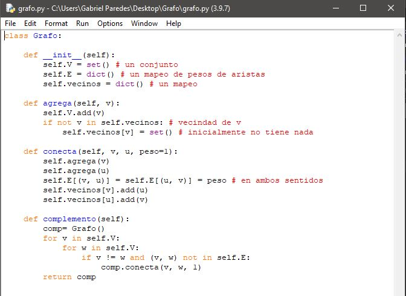

Python es un lenguaje de programación de alto nivel que se utiliza para desarrollar aplicaciones de todo tipo. A diferencia de otros lenguajes como Java o .NET, se trata de un lenguaje interpretado, es decir, que no es necesario compilarlo para ejecutar las aplicaciones escritas en Python, sino que se ejecutan directamente por el ordenador utilizando un programa denominado interpretador, por lo que no es necesario “traducirlo” a lenguaje máquina.
Sintaxis
La sintaxis es a la programación lo que la gramática es a los idiomas. De la misma forma que la frase “Yo estamos aquí” no es correcta, el siguiente código en Python no sería correcto, ya que no respeta las normas del lenguaje.
if ($variable){
x=9;
}
Python no soporta el uso de $ ni hace falta terminar las líneas con ; como en otros lenguajes, y tampoco hay que usar {} en estructuras de control como en el if. Aqui se muestra la sintaxis basica de Python
| TIPO | SYNTAXIS | EJEMPLO | ||
| Comentarios | detras de un # | #hola este es un comentario | ||
| Espacios | Los espacios en python significan algo mientras que en c o en Java se usan corchetes para marcar los procesos ejemplo dentro de un for, en python se usan espacios |
for v in self.V:
for w in self.V:
if v != w and (v, w) not in self.E:
comp.conecta(v, w, 1)
|
||
| Definición de funciones: |
>>>def_nombrefunción(arg1,arg2..):
|
>>> def hola(a,b,c): return a+b+c |
||
| Variables | En python no es necesario declarar el tipo de variable al incio solo se va asignando valores y python clasifica que tipo es | a = 1 x = 2.5 c = 'hola' |
||
| Final de cada instruccion | En python al final de cada instruccion NO es necesio inculir un punto y coma ya que al cambiar de linea python automaticamente lo detecta como el fin de la instruccion | >>>a = 5 >>>b = 2 >>>a * b >>>10 |
Simbolos
Aritmeticos
| + | Suma | |
| - | resta | |
| * | Multiplicación | |
| / | División | |
| // | División entera | |
| % | Modulo | |
| sqrt() | raiz cuadrada | |
| ** | Potencia |
Relacionales
| == | Igual que | |
| > | Mayor que | |
| >= | Mayor igual que | |
| < | Menor que | |
| <= | Menor igual que | |
| != | Diferente que |
Lógicos o Booleanos
| or | solo evalua el segundo operando si el primero es falso | |
| and | Solo se evalúa el segundo operando si el primero es verdadero | |
| not | Tiene menos prioridad que otros operadores no booleanos |
Palabras reservadas
| else | |
| finally | |
| global | |
| import | |
| from | |
| lambda | |
| while | |
| raise | |
| exec | |
| yield | |
| pass | |
| try | |
| raise | |
| return | |
+ |
Estructura basica
# CABECERA (Simplemente comentarios aclaratorias de nuestro programa)
# LLAMADA A LIBRERIAS (Si las hubiera)
# CONSTANTES (No existen en Python, las simularemos con un identificador que comience por mayúscula)
# FUNCIONES Y PROCEDIMIENTOS(Si los hubiera)
# Cuerpo principal del programa (Aquí se definirán todas las variables globales)
Aplicación para ejecutar y editar codigo Python
Consola
Al descargar python desde su web oficial se puede comenzar a programar directamente desde la consola iniciando el comado py se iniciar y directamente podras comenzar a escribir codigo python en MODO INTERACTIVO (Cada linea de codigo es interpretada)
IDLE
Tambien al descargar python desde su web oficial se descarga IDLE que es un entorno en el que se escribe codigo python en MODO SCRIPT (escribir codigo y despues correrlo)
OTROS
Paradigma al que pertenece
Python es un lenguaje Multiparadigma: orientado a objetos, imperativo, funcional, reflexivo
Programa basico en Python
Este programa resuelve problemas por el algoritmo de Ford y Fulkerson
def camino(s, t, c, f): # construcción de un camino aumentante
cola = [s]
usados = set()
camino = dict()
while len(cola) > 0:
u = cola.pop(0)
usados.add(u)
for (w, v) in c:
if w == u and v not in cola and v not in usados:
actual = f.get((u, v), 0)
dif = c[(u, v)] - actual
if dif > 0:
cola.append(v)
camino[v] = (u, dif)
if t in usados:
return camino
else: # no se alcanzó
return None
def ford_fulkerson(c, s, t): # algoritmo de Ford y Fulkerson
if s == t:
return 0
maximo = 0
f = dict()
while True:
aum = camino(s, t, c, f)
if aum is None:
break # ya no hay
incr = min(aum.values(), key = (lambda k: k[1]))[1]
u = t
while u in aum:
v = aum[u][0]
actual = f.get((v, u), 0) # cero si no hay
inverso = f.get((u, v), 0)
f[(v, u)] = actual + incr
f[(u, v)] = inverso - incr
u = v
maximo += incr
return maximo
# datos tomados de:
# http://www.aduni.org/courses/algorithms/courseware/handouts/Reciation_09.html
#CAPACIDADES (DESDE-HAST)
c = {(0, 1): 16, (1 , 4):8 ,(0, 2): 13, (1, 2): 10, (2, 1): 4, (3, 2): 9, \
(1, 3): 12, (2, 4): 14, (4, 3): 7, (3, 5): 20, (4, 5): 4}
opciones = [0 , 1, 2, 3, 4, 5, 6, 7 ,8]
mayor = 0
for s in opciones: # CAMBIAR (fuente)
for t in opciones: # CAMBIAR (sumidero)
nuevo = ford_fulkerson(c, s, t)
mayor = max(mayor, nuevo)
print(mayor)